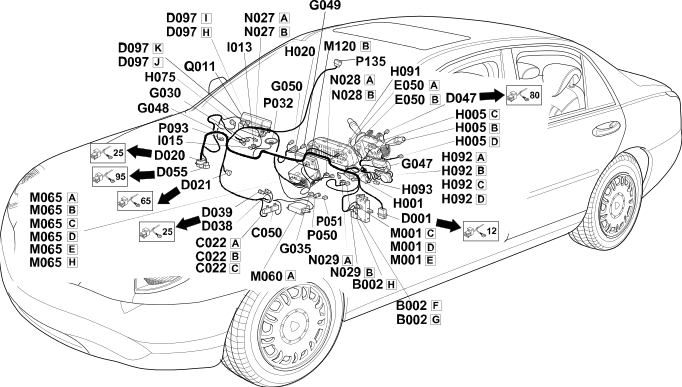

20 dashboard
- Path
- Electrical equipment > Wiring > 20 dashboard
- Kind
- wiring harness
- Applies to
- all engines; all production periods
- Interactive page
- https://sloeber94.github.io/elrnDB-lThss/en/#/207341
Applies to: all engines; all production periods

Topics that link to this page (63)
- B002F Junction unit under dashboard(DASHBOARD)
- B002G Junction unit under dashboard(DASHBOARD)
- B002H Junction unit under dashboard(DASHBOARD)
- C022A Centre dashboard earth(DASHBOARD)
- C022B Centre dashboard earth(DASHBOARD)
- C022C Centre dashboard earth(DASHBOARD)
- C022D Centre dashboard earth(DASHBOARD)
- C050 Air Bag system earth(DASHBOARD)
- D001 Front/dashboard coupling(FRONT)
- D020 Dashboard/rear coupling(DASHBOARD)
- D021 Dashboard/air conditioning-heater coupling(DASHBOARD)
- D038 Rear dashboard coupling for pretensioners/side bag (left),(DASHBOARD)
- D039 Pretensioner/Side Bag (left) rear dashboard coupling(DASHBOARD)
- D047 Clock spring coupling(DASHBOARD)
- D055 Dashboard/TV coupling(DASHBOARD)
- D055 Dashboard/TV coupling(DASHBOARD)
- D097H Short circuit coupling(DASHBOARD)
- D097I Short circuit coupling(DASHBOARD)
- D097J Short circuit coupling(DASHBOARD)
- D097K Short circuit coupling(DASHBOARD)
- E050A Instrument panel(DASHBOARD)
- E050B Instrument panel(DASHBOARD)
- G030 Glove compartment light(DASHBOARD)
- G035 Ashtray light(DASHBOARD)
- G047 Driver's vent light(DASHBOARD)
- G048 Passenger side vent light(DASHBOARD)
- G050 Right centre vent light bulb(DASHBOARD)
- H001B Ignition switch(DASHBOARD)
- H005B Steering column switch unit(DASHBOARD)
- H005C Steering column switch unit(DASHBOARD)
- H020 Hazard warning lights switch(DASHBOARD)
- H075 Passenger Air Bag disabling switch(DASHBOARD)
- H091 Left control unit (PCS, left control panel)(DASHBOARD)
- H092A Exterior light controls (CLE)(DASHBOARD)
- H092B Exterior light controls (CLE)(DASHBOARD)
- H092C Exterior light controls (CLE)(DASHBOARD)
- H092D Exterior light controls (CLE)(DASHBOARD)
- H093 Steering wheel adjustment control unit(DASHBOARD)
- I015 Glove compartment light switch(DASHBOARD)
- M001C Body computer(DASHBOARD)
- M001D Body computer(DASHBOARD)
- M001E Body computer(DASHBOARD)
- M001C Body computer(DASHBOARD)
- M001D Body computer(DASHBOARD)
- M001E Body computer(DASHBOARD)
- M060A Air Bag control unit(DASHBOARD)
- M065A Info-telematic control unit (NIT)(DASHBOARD)
- M065B Info-telematic control unit (NIT)(DASHBOARD)
- M065C Info-telematic control unit (NIT)(DASHBOARD)
- M065D Info-telematic control unit (NIT)(DASHBOARD)
- M065F Info-telematic control unit (NIT)(DASHBOARD)
- M120B Connect front panel(DASHBOARD)
- N027A Glove compartment motor(DASHBOARD)
- N027B Glove compartment motor(DASHBOARD)
- N028A Steering wheel axial movement motor(DASHBOARD)
- N028B Steering wheel axial movement motor(DASHBOARD)
- N029A Steering wheel vertical movement motor(DASHBOARD)
- N029B Steering wheel vertical movement motor(DASHBOARD)
- P032 Centre front speaker(DASHBOARD)
- P050 Cigar lighter/current socket(DASHBOARD)
- P051 Current socket in dashboard(DASHBOARD)
- P135 Additional heater aerial(DASHBOARD)
- Q011 Air Bag in dashboard (passenger side)(DASHBOARD)